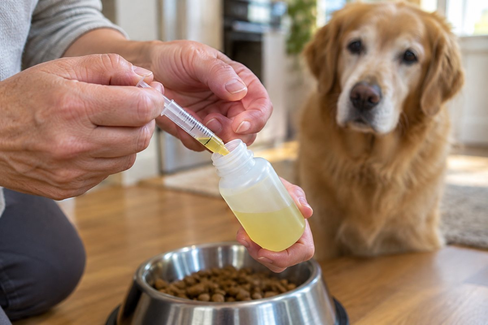
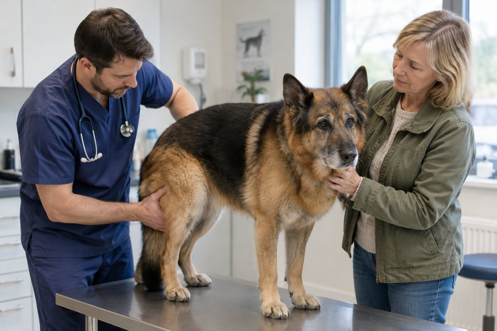

Buying it yourself is usually cheaper. In the UK your vet must give you a written prescription if you ask — and you can then fill it anywhere. VioVet stocks your pet’s repeat medication: check today’s price at VioVet. We earn a small commission if you buy through this link. It costs you nothing extra and never changes the prices we show.
The stairs take a little longer now. He waits at the bottom before the car boot. On cold mornings he gets up in stages: front legs first, then a pause, then the rest.
That isn't "just old age". It is very often arthritis, and it is painful. The good news is that it is also one of the most treatable conditions in an older dog, and the medicine most UK vets reach for first, meloxicam, is one of the best-studied drugs in veterinary medicine.
The less good news is the price. Meloxicam is usually given every day, for years. Paying brand prices at the practice counter for something your dog will take for the rest of its life adds up quickly. This guide covers both sides: what the evidence actually shows, and how to pay less for exactly the same active ingredient.
Illustrative image
How Common Is Arthritis in UK Dogs?
More common than most owners think. A study of 455,557 dogs under primary veterinary care in the UK, run by the Royal Veterinary College's VetCompass programme and published in Scientific Reports in 2018, found that 2.5% of dogs were recorded with osteoarthritis in a single year. That is roughly 200,000 UK dogs every year.
- Average age at diagnosis: 10.5 years.
- Weight matters: dogs above the average bodyweight for their breed had 2.3 times the odds of osteoarthritis.
- Breeds at higher risk included Rottweilers, Dogues de Bordeaux, Old English Sheepdogs, Labradors, Golden Retrievers, German Shepherds and Border Collies.
- Pain relief was recommended in 75% of cases, which is why medicines like meloxicam matter so much.
What Is Meloxicam, and How Does It Work?
Meloxicam is a non-steroidal anti-inflammatory drug (NSAID). It reduces the production of prostaglandins, the chemical messengers that drive inflammation and pain inside an arthritic joint. Less inflammation means less pain, and less pain means a dog that moves more, which in turn helps keep the muscles around the joint strong.
In the UK it is a POM-V medicine: it can only be supplied with a veterinary prescription. For dogs it is most often given as an oral liquid, dosed by bodyweight once a day with food, using the measuring syringe in the box.
⚠️ Dog and cat versions are not the same strength
Meloxicam is also licensed for cats, but cat oral suspensions are weaker than dog ones (commonly 0.5 mg/ml for cats against 1.5 mg/ml for dogs). Never give a dog's meloxicam to a cat, and never measure one with the other's syringe.
What the Research Says: Does Meloxicam Really Work?
This is where meloxicam stands apart from many products sold for joint pain: it has been tested in controlled clinical trials, not just in marketing claims. Here are the studies worth knowing, in date order.
2000: The first clinical trial in arthritic dogs
A Canadian trial published in the Canadian Veterinary Journal (Doig et al., 2000) followed 40 dogs with chronic osteoarthritis. In the first week, meloxicam was compared with a placebo; dogs then continued on meloxicam for four weeks. Vets scored lameness, stiffness, difficulty rising, exercise intolerance and behaviour. After four weeks, clinical signs had fallen significantly, and side effects were described as "minimal in extent and duration".
2003: Meloxicam vs carprofen vs a joint supplement vs placebo
In a double-blind study of 71 client-owned dogs published in the Veterinary Record (Moreau et al., 2003), dogs were randomly given meloxicam, carprofen, a nutraceutical joint supplement or a placebo for 60 days. The researchers measured how much weight each dog put on its legs using a force plate, an objective test that doesn't rely on anyone's opinion.
- Meloxicam: weight-bearing improved significantly and returned to the values of healthy dogs. Both owners and orthopaedic surgeons judged the dogs to be better.
- Carprofen: improved significantly, but did not return to normal values.
- Joint supplement: no significant improvement on the force plate.
- Safety: blood and faecal tests showed no changes in the treatment groups, with one case of liver problems in a dog given carprofen.
Illustrative image
2010: Is long-term use better than short courses?
A review in the Veterinary Record (Innes, Clayton and Lascelles, 2010) looked at NSAID use for 28 days or longer. Of seven papers comparing long-term with short-term treatment, six found more benefit from long-term use. Across 14 papers assessing safety, the length of treatment was not linked to a higher rate of side effects, although the authors stressed that large, long-term safety data are still limited.
2013: What about side effects?
A systematic review in the Journal of Veterinary Internal Medicine (Monteiro-Steagall, Steagall and Lascelles, 2013) pulled together 64 studies covering 14 NSAIDs. The evidence for meloxicam was rated high quality. In the best-designed trials (randomised and placebo-controlled), no difference in adverse effects was found between NSAID and placebo groups. Where problems did occur, they were mostly gastrointestinal (vomiting, diarrhoea); liver and kidney problems were rare.
2020: Is meloxicam better than carprofen?
An independent evidence summary in Veterinary Evidence (2020) concluded that both meloxicam and carprofen are effective for canine osteoarthritis, but there isn't enough high-quality evidence to say that one is superior. In practice, the right one is the one that suits your dog, and your vet is best placed to judge that.
What owners reported in the trials
- In the 2003 study, owners of dogs on meloxicam noticed the improvement themselves, not just the vets measuring it.
- In a small 2007 pilot study (16 dogs, 7 completing all assessments), owners' scores for their dogs' comfort improved from an average of 21.1 to 12.0, with no drug-related side effects reported.
- In the 2000 trial, the signs owners notice at home, such as stiffness, difficulty getting up and reluctance to exercise, were among the scores that improved.
Metacam vs Loxicom, Inflacam, Meloxidyl and Rheumocam: What's the Difference?
Metacam was the original meloxicam product for dogs. Since then, several equivalents have been authorised in the UK by the Veterinary Medicines Directorate (VMD). They contain the same active ingredient, are licensed for the same use, and go through the same regulator.
- Metacam (the reference brand)
- Loxicom
- Inflacam
- Meloxidyl
- Rheumocam
So why do prices differ? Mainly brand positioning, bottle size and where you buy, not what's inside. Prices for the same active ingredient can vary a lot from one seller to another, for reasons we explain in why pet medicine prices vary so much in the UK.
💡 Compare like with like
When you compare, check three things are identical: the active ingredient (meloxicam), the strength (for example 1.5 mg/ml for dogs) and the species it is licensed for. Then compare the price per ml, not the price per bottle. Larger bottles usually work out cheaper per dose for a dog on long-term treatment.
Compare meloxicam prices with Maggie
See Metacam and its VMD-authorised equivalents side by side, by active ingredient, so you never pay brand prices for the same medicine.
Compare prices now5 Legitimate Ways to Pay Less for Long-Term Meloxicam
1. Ask for a written prescription. Your vet must provide one if you ask. Following the CMA's final decision in March 2026, the fee for a written prescription is capped at £21 for the first medicine. For a medicine your dog takes every day, that one-off fee is often recovered within the first bottle or two. We explain the full rules in your legal right to a written prescription.
2. Ask whether an equivalent is suitable. If your dog is doing well on Metacam, ask your vet whether they are happy for you to use one of the authorised equivalents, and whether they'll write the prescription in a way that allows it. Don't switch on your own: the decision belongs to your vet.
3. Compare price per ml, and buy the size that fits. A dog on daily treatment gets through a bottle steadily. Larger bottles are usually better value per ml, as long as you'll use them before the expiry date once opened.

Illustrative image
4. Talk to your vet about weight. Meloxicam is dosed by bodyweight, and the 2018 VetCompass study found overweight dogs had 2.3 times the odds of osteoarthritis. A slimmer dog needs a smaller dose, and its joints carry less load. It is one of the few changes that helps both the dog and the bill.
5. Ask whether the lowest effective dose is right for your dog. Some vets gradually reduce the daily dose once pain is controlled. A small 2007 pilot study reported dogs kept improving after their dose was reduced to half the label dose. The evidence is preliminary and the dose must only ever be changed by your vet, but it's a reasonable question to ask at a review.
Using Meloxicam Safely, Year After Year
Meloxicam has a good safety record, but it is still an NSAID, and long-term use needs supervision:
- Give it with food, at the dose your vet prescribed, using the syringe that came with that bottle.
- Keep up with check-ups and blood tests your vet recommends, especially for older dogs or dogs with kidney or liver problems.
- Watch for warning signs: vomiting, diarrhoea, black or tarry stools, loss of appetite, lethargy or drinking more than usual. If you see any of them, stop and call your vet.
- Never combine it with another NSAID or a steroid unless your vet tells you to.
- Never give human painkillers. Ibuprofen and similar medicines made for people can cause serious poisoning in dogs and cats, according to the PDSA.

Illustrative image
When Meloxicam Isn't the Right Fit
Some dogs can't take NSAIDs long term, usually because of kidney, liver or stomach problems. For them, vets have other options, including monthly Librela injections. We compare the costs in what Librela really costs in the UK. Many owners also add a joint supplement alongside prescribed treatment; our guide to dog joint supplements explains what's in them and which ingredients have evidence behind them.
⚠️ Important reminder
This article is for educational purposes and does not replace veterinary advice. Never start, stop, change the dose of or switch your dog's arthritis medication without consulting your vet.
The Bottom Line
Meloxicam is one of the best-studied arthritis medicines for dogs: controlled trials since 2000 show it reduces pain and lameness, and long-term use appears to bring more benefit than short courses, under veterinary supervision. Metacam and its authorised equivalents contain the same active ingredient. The brand on the box changes the price far more than it changes the medicine.
Ask for the written prescription, ask your vet about equivalents, compare by price per ml, and keep the weight down. Over years of daily treatment, those four habits make a real difference.
Compare meloxicam and other arthritis medicines now on Maggie Search
Where to buy your pet’s medication for less
Ask your vet for a written prescription, then fill it at an online pharmacy. For long-term medication the saving compounds every single month — for the same medicine, in the same box.
Check prices at VioVetWe earn a small commission if you buy through this link. It costs you nothing extra and never changes the prices we show.
References (in date order)
- Doig PA, Purbrick KA, Hare JE, McKeown DB (2000). Clinical efficacy and tolerance of meloxicam in dogs with chronic osteoarthritis. Canadian Veterinary Journal, 41(4):296–300. Read the paper
- Moreau M, Dupuis J, Bonneau NH, Desnoyers M (2003). Clinical evaluation of a nutraceutical, carprofen and meloxicam for the treatment of dogs with osteoarthritis. Veterinary Record, 152(11):323–329. doi:10.1136/vr.152.11.323
- Huneault L, Moreau M, Troncy É (2007). A pilot study of long-term, lower dose meloxicam therapy in osteoarthritic dogs. WSAVA World Congress Proceedings. Read the abstract
- Innes JF, Clayton J, Lascelles BDX (2010). Review of the safety and efficacy of long-term NSAID use in the treatment of canine osteoarthritis. Veterinary Record, 166(8):226–230. doi:10.1136/vr.c97
- Monteiro-Steagall BP, Steagall PVM, Lascelles BDX (2013). Systematic review of nonsteroidal anti-inflammatory drug-induced adverse effects in dogs. Journal of Veterinary Internal Medicine, 27:1011–1019. Publication record
- Anderson KL, O'Neill DG, Brodbelt DC, Church DB, Meeson RL, Sargan D, et al. (2018). Prevalence, duration and risk factors for appendicular osteoarthritis in a UK dog population under primary veterinary care. Scientific Reports, 8:5641. Read the paper
- Veterinary Evidence (2020). Knowledge summary: in dogs diagnosed with osteoarthritis, is meloxicam superior to carprofen for reducing patient discomfort? doi:10.18849/ve.v5i3.288
- Competition and Markets Authority (26 March 2026). Final decision: veterinary services for household pets market investigation. CMA cases
- Veterinary Medicines Directorate. Product Information Database (meloxicam products authorised in the UK). VMD database
- PDSA. Ibuprofen poisoning in dogs and cats. PDSA Pet Health Hub